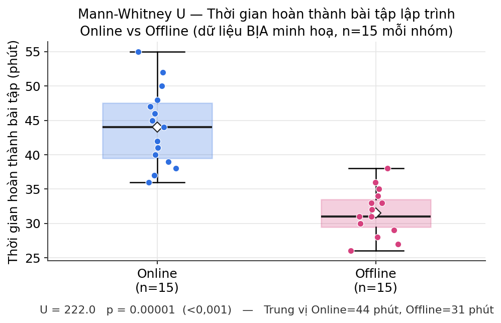
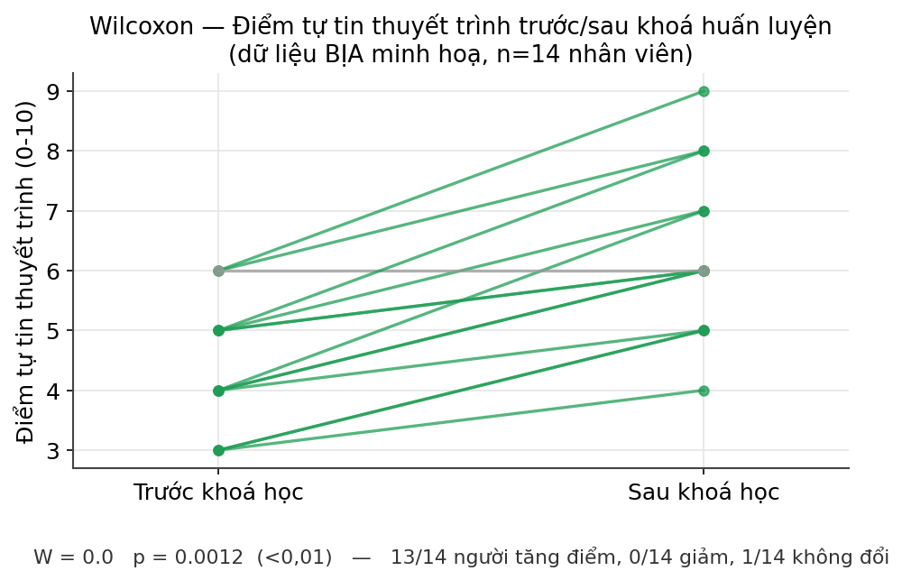
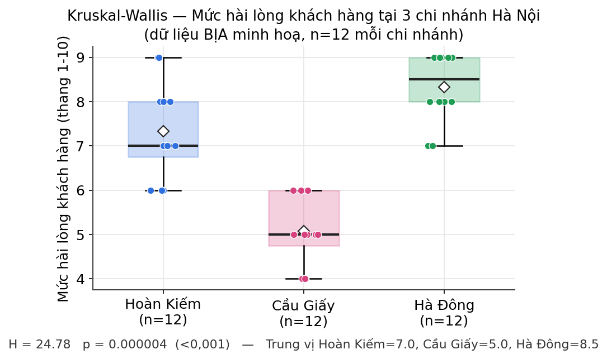
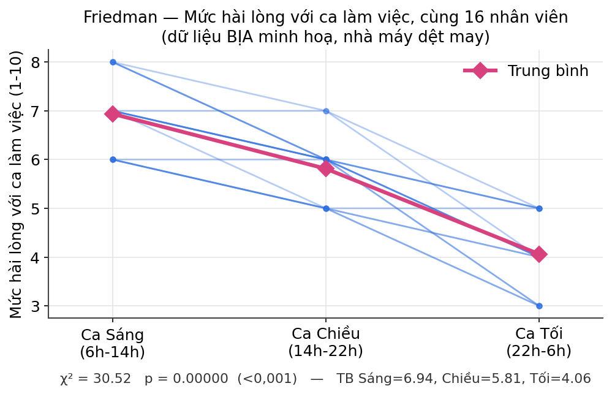
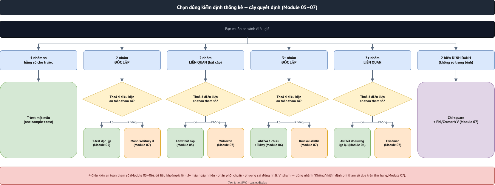

07 · Chi-square & kiểm định phi tham số
Module 7/12 · Nội dung bám theo Cohen, Manion & Morrison, Research Methods in Education, ấn bản 8 (Routledge, 2018), chương 41 mục 41.4 "The chi-square test", 41.5 "Degrees of freedom", 41.6 "The Mann-Whitney and Wilcoxon tests", 41.7 "The Kruskal-Wallis and Friedman tests" (tr.789–800).
0. Khái niệm & đặc điểm của kiểm định phi tham số
Kiểm định phi tham số (non-parametric test / "distribution-free test") không giả định dữ liệu tổng thể tuân theo một phân phối cụ thể (vd phân phối chuẩn) và không ước lượng các tham số tổng thể (μ, σ) như t-test/ANOVA — thay vào đó làm việc trực tiếp trên THỨ HẠNG (ranks) hoặc TẦN SỐ (frequencies) của dữ liệu.
| Đặc điểm | Ý nghĩa thực tế |
|---|---|
| Không cần phân phối chuẩn | Không bắt buộc kiểm tra Shapiro-Wilk/Kolmogorov-Smirnov trước khi chạy |
| Dùng được dữ liệu thứ bậc/định danh | Không cần thang đo khoảng cách đều (interval/ratio) như t-test/ANOVA đòi hỏi |
| Ít nhạy cảm với giá trị ngoại lai | Vì chuyển giá trị thô thành HẠNG trước khi tính, một giá trị cực đoan không "kéo lệch" kết quả như trung bình cộng |
| Phù hợp cỡ mẫu nhỏ | Khi N quá nhỏ để kiểm tra giả định chuẩn một cách đáng tin cậy |
- Dữ liệu là thang Likert/thứ bậc (ordinal), không đảm bảo khoảng cách đều giữa các mức
- Kiểm tra chuẩn thất bại (Shapiro-Wilk p<0,05) và mẫu không đủ lớn để nhờ định lý giới hạn trung tâm
- Có giá trị ngoại lai mạnh làm lệch trung bình/phương sai
- Cỡ mẫu nhỏ (thường N<30 mỗi nhóm) — khó kiểm tra giả định tham số đáng tin cậy
1. Kiểm định Chi-square (χ²)
Chi-square là kiểm định phổ biến nhất cho dữ liệu định danh, so sánh tần số QUAN SÁT (observed) với tần số KỲ VỌNG (expected) trong bảng chéo. Kỳ vọng mỗi ô = (tổng hàng × tổng cột) / tổng chung (tr.789–790).
Ví dụ của Cohen et al. (tr.789–790): 195 người (nam/nữ) bỏ phiếu thích/không thích Toán. Chi-square tính ra χ²=28,87, so với giá trị tới hạn 9,21 (mức 0,01) → 28,87>9,21, có ý nghĩa thống kê rất cao. Viết báo cáo: "Một khác biệt có ý nghĩa thống kê được tìm thấy giữa nam và nữ (χ²=28,87, df=2, p=0,000)."
- Otần số QUAN SÁT được ở mỗi ô của bảng chéo
- Etần số KỲ VỌNG ở ô đó nếu H0 đúng (2 biến độc lập) — tính bằng (tổng hàng × tổng cột) / tổng mẫu
- Σcộng dồn (O−E)²/E qua TẤT CẢ các ô trong bảng
Trực giác: mỗi ô đóng góp phần "lệch khỏi kỳ vọng" bình phương hoá — χ² càng lớn, bảng quan sát càng khác xa với giả định "2 biến không liên quan".
Yates's correction (continuity correction): bù đắp cho việc chi-square bị phóng đại trong bảng 2×2; SPSS tự động áp dụng cho bảng 2×2.
Cỡ hiệu ứng: bảng 2×2 dùng hệ số Phi (ngưỡng như Cohen's d: nhỏ=0,10, vừa=0,30, lớn=0,50); bảng lớn hơn dùng Cramer's V (tr.791–792).
- Giới tính × Phương pháp dạy: χ²(1)=1,37, p=0,243 → không có ý nghĩa.
- Giới tính × Trường (bảng 2×3): χ²(2)=0,14, p=0,932, 0% ô vi phạm quy tắc 20% (kết quả đáng tin) → không có ý nghĩa, Cramer's V≈0,024 (gần như 0).
| Dự án | Truyền thống | Tổng hàng | |
|---|---|---|---|
| Nam (O) | 63 | 58 | 121 |
| Nữ (O) | 52 | 67 | 119 |
| Tổng cột | 115 | 125 | 240 |
Kỳ vọng từng ô = (tổng hàng × tổng cột)/tổng chung: E(Nam,Dự án)=121×115/240=57,98; E(Nam,Truyền thống)=121×125/240=63,02; E(Nữ,Dự án)=119×115/240=57,02; E(Nữ,Truyền thống)=119×125/240=61,98.
| Ô | O | E | (O−E)²/E |
|---|---|---|---|
| Nam, Dự án | 63 | 57,98 | (63−57,98)²/57,98=0,435 |
| Nam, Truyền thống | 58 | 63,02 | (58−63,02)²/63,02=0,400 |
| Nữ, Dự án | 52 | 57,02 | (52−57,02)²/57,02=0,442 |
| Nữ, Truyền thống | 67 | 61,98 | (67−61,98)²/61,98=0,407 |
Cộng 4 số hạng: 0,435+0,400+0,442+0,407=1,684=χ² THÔ (chưa hiệu chỉnh). Áp hiệu chỉnh liên tục Yates cho bảng 2×2 (bù phần phóng đại do xấp xỉ phân phối rời rạc bằng phân phối liên tục) → χ²=1,365, df=(2−1)(2−1)=1, p=0,243 — khớp đúng số đã công bố ở trên, verify bằng scipy.stats.chi2_contingency.
🧮 Tự tính thử: dán bất kỳ bảng chéo nào của riêng bạn (2×2 hay lớn hơn) vào widget dưới đây — widget tự động tính O, E, χ², df, p, áp đúng Yates's correction cho bảng 2×2 giống SPSS, hoặc bấm nút để nạp lại chính bảng Giới tính × Phương pháp vừa tính tay ở trên.
2. Bậc tự do (Degrees of Freedom)
Trực giác (theo Cohen & Holliday, trích tr.792–793): chọn 5 số với tổng cố định=25 → 4 số đầu được TỰ DO chọn, số thứ 5 bị RÀNG BUỘC → df=4=N−1. Mỗi điều kiện ràng buộc thêm làm giảm 1 bậc tự do.
Với bảng chéo: df = (số hàng − 1) + (số cột − 1). Ví dụ bảng 2×3 của sách (tr.792): (2−1)+(3−1)=3.
3. Mann-Whitney U test
Tương đương phi tham số của t-test mẫu độc lập — dùng cho 2 mẫu độc lập với ít nhất 1 biến thứ bậc, không cần giả định phân phối chuẩn. Dựa trên THỨ HẠNG: đếm số lần điểm nhóm này xếp cao hơn nhóm kia (tr.793).
🗣️ Nói nôm na: xếp CHUNG tất cả người của cả 2 nhóm vào một hàng, từ điểm thấp nhất tới cao nhất (không quan tâm điểm chính xác bao nhiêu, chỉ quan tâm AI ĐỨNG TRƯỚC AI). Nếu người của nhóm nào đó có xu hướng đứng dồn về phía cuối hàng (điểm cao), nhóm đó "thắng" — không cần biết điểm trung bình chính xác, chỉ cần biết thứ hạng.
- n₁, n₂cỡ mẫu của nhóm 1 và nhóm 2
- R₁tổng THỨ HẠNG (rank) của nhóm 1, sau khi gộp cả 2 nhóm rồi xếp hạng chung toàn bộ quan sát
- U₁số lần một quan sát nhóm 1 xếp hạng cao hơn một quan sát nhóm 2 — U càng lệch xa giá trị kỳ vọng (n₁n₂/2), càng có bằng chứng khác biệt
Ví dụ sách (tr.793–794): đánh giá khoá học theo giới tính (thang 5 điểm), U=2.732,500, p=0,019 → có ý nghĩa, nam cảm thấy mạnh mẽ hơn nữ về việc khoá học cho phép học theo tốc độ riêng.
Nhóm A (n₁=3): điểm 5, 7, 9. Nhóm B (n₂=3): điểm 4, 6, 8.
Bước 1 — gộp 6 giá trị, xếp hạng tăng dần: 4(B)→hạng 1, 5(A)→hạng 2, 6(B)→hạng 3, 7(A)→hạng 4, 8(B)→hạng 5, 9(A)→hạng 6.
Bước 2 — cộng hạng nhóm A: R₁ = 2+4+6 = 12.
Bước 3 — thay vào công thức: U₁ = n₁n₂ + n₁(n₁+1)/2 − R₁ = (3×3) + (3×4/2) − 12 = 9+6−12 = 3.
Kiểm tra bằng đẳng thức U₁+U₂=n₁n₂: U₂=9−3=6, 3+6=9 ✓. U=3 khá gần giá trị kỳ vọng khi không có khác biệt (n₁n₂/2=4,5) → với mẫu nhỏ này, 2 nhóm không khác biệt rõ rệt.
Bối cảnh minh hoạ: một trường đại học mở 2 lớp song song cho cùng môn "Nhập môn Lập trình" — một lớp học Online (sinh viên tự học qua video, hỏi đáp qua chat), một lớp học Offline (có trợ giảng (TA) ngồi cạnh hỗ trợ trực tiếp trong phòng lab). Cuối buổi, đo thời gian hoàn thành cùng một bài tập lập trình (phút) của 15 sinh viên mỗi lớp, chọn ngẫu nhiên không trùng người (dữ liệu hoàn toàn bịa ra để minh hoạ, cỡ mẫu n=15/nhóm lớn hơn ví dụ tính tay ở trên để thấy rõ cách đọc output phần mềm thật).
| Lớp | Số liệu (phút), 15 sinh viên |
|---|---|
| Online (n=15) | 38, 45, 41, 50, 36, 48, 42, 55, 39, 44, 47, 40, 52, 37, 46 |
| Offline (n=15) | 30, 33, 28, 35, 31, 29, 34, 32, 27, 36, 30, 33, 26, 38, 31 |
Các bước trung gian (gộp cả 30 sinh viên thành 1 hàng xếp hạng, đúng cơ chế U, không phải "hộp đen"):
- Gộp 30 giá trị của cả 2 lớp, xếp hạng tăng dần từ nhỏ nhất (26 phút→hạng 1) tới lớn nhất (55 phút→hạng 30). Giá trị trùng nhau lấy hạng TRUNG BÌNH — vd hai sinh viên cùng 30 phút chiếm hạng 5 và 6 thì mỗi người nhận hạng (5+6)/2=5,5.
- Cộng hạng riêng từng lớp: R(Online)=342, R(Offline)=123.
- Kiểm tra: 342+123=465, đúng bằng N(N+1)/2=30×31/2=465 ✓.
- Thay vào công thức U₁=n₁n₂+n₁(n₁+1)/2−R₁, với n₁=n₂=15: U₁=15×15+15×16/2−342=225+120−342=3. U₂=n₁n₂−U₁=225−3=222. Thống kê U chính thức = MAX(U₁,U₂)=222 (quy ước SPSS/scipy lấy U lớn hơn khi báo cáo).
from scipy import stats online = [38, 45, 41, 50, 36, 48, 42, 55, 39, 44, 47, 40, 52, 37, 46] offline = [30, 33, 28, 35, 31, 29, 34, 32, 27, 36, 30, 33, 26, 38, 31] u, p = stats.mannwhitneyu(online, offline, alternative='two-sided') print(u, p) # Output: U = 222.0 p = 0.000006

Đọc kết quả: U=222, p=0,000006 (<0,001) → có ý nghĩa thống kê rất cao. Trung vị Online=44 phút, Offline=31 phút — nhóm Online làm bài LÂU HƠN nhóm Offline rõ rệt trong bộ dữ liệu bịa này, khớp với hình: 2 hộp gần như không chồng lên nhau chút nào (ngược hướng so với ví dụ sách, chỉ để minh hoạ cách đọc output, không phải kết luận thật về hiệu quả học online/offline).
4. Wilcoxon test
Tương đương phi tham số của t-test bắt cặp — dùng khi CÙNG một nhóm cho 2 giá trị (2 biến/2 thời điểm) nhưng dữ liệu không thoả điều kiện tham số (tr.795–796).
🗣️ Nói nôm na: với MỖI người, xem họ TĂNG hay GIẢM giữa 2 lần đo, và tăng/giảm nhiều hay ít (xếp hạng độ lớn thay đổi, không dùng điểm số thô) — rồi so tổng phần "tăng" với tổng phần "giảm" của cả nhóm. Nếu phần tăng và phần giảm xấp xỉ cân bằng nhau, kết luận "không đổi gì nhiều"; nếu lệch hẳn về một phía, kết luận "có thay đổi thật".
Ví dụ sách: cùng 1 nhóm đánh giá 2 biến khoá học ("khoá học vừa đủ" và "giảng viên chuẩn bị tốt"), kết quả có ý nghĩa (p=0,000) — nhóm đánh giá tích cực hơn cho biến "giảng viên chuẩn bị tốt".
scipy.stats.wilcoxon, không phải trích từ dữ liệu lớp học thật):
| Người | Trước | Sau | Hiệu (Trước−Sau) |
|---|---|---|---|
| 1 | 7 | 4 | +3 |
| 2 | 5 | 5 | 0 (loại — không đổi) |
| 3 | 8 | 3 | +5 |
| 4 | 6 | 7 | −1 |
| 5 | 9 | 5 | +4 |
| 6 | 4 | 6 | −2 |
Bước 1 — bỏ người có hiệu=0 (không đổi), còn lại 5 người. Xếp hạng trị tuyệt đối |hiệu| tăng dần: |−1|=1→hạng 1, |−2|=2→hạng 2, |+3|=3→hạng 3, |+4|=4→hạng 4, |+5|=5→hạng 5.
Bước 2 — cộng hạng riêng cho dấu DƯƠNG và dấu ÂM: hạng dương (người 1,3,5) = 3+4+5=12; hạng âm (người 4,6) = 1+2=3.
Bước 3 — kiểm tra: tổng 2 phần phải bằng n(n+1)/2 = 5×6/2=15 → 12+3=15 ✓. Thống kê W = phần NHỎ HƠN trong 2 tổng = 3.
W=3 nhỏ hơn hẳn giá trị kỳ vọng khi không có thay đổi gì (15/2=7,5) → nghiêng về có thay đổi thật (p=0,225 với mẫu rất nhỏ n=5, chưa đủ ý nghĩa thống kê — minh hoạ cho thấy cỡ mẫu nhỏ làm khó đạt ý nghĩa dù xu hướng khá rõ).
Bối cảnh minh hoạ: phòng Kinh doanh của một công ty tổ chức khoá huấn luyện kỹ năng thuyết trình nội bộ, kéo dài 8 buổi. Trước buổi 1 và ngay sau buổi 8, mỗi nhân viên tự chấm điểm tự tin khi thuyết trình trước khách hàng (thang 0-10) — 14 nhân viên tham gia đủ cả 2 lần đo (dữ liệu hoàn toàn bịa ra để minh hoạ, cố ý để lại 1 người không đổi điểm (hiệu=0) để thấy quy tắc Wilcoxon loại bỏ cặp bằng nhau trước khi xếp hạng).
| Nhân viên | 1 | 2 | 3 | 4 | 5 | 6 | 7 | 8 | 9 | 10 | 11 | 12 | 13 | 14 |
|---|---|---|---|---|---|---|---|---|---|---|---|---|---|---|
| Trước | 4 | 5 | 3 | 6 | 4 | 5 | 3 | 6 | 4 | 5 | 6 | 4 | 5 | 3 |
| Sau | 6 | 7 | 5 | 8 | 6 | 6 | 5 | 9 | 7 | 6 | 6 | 5 | 8 | 4 |
Các bước trung gian (đúng cơ chế W, không phải "hộp đen" — giống hệt logic ví dụ tính tay ở trên, chỉ cỡ mẫu lớn hơn):
- Tính hiệu Sau−Trước cho 14 người: 2,2,2,2,2,1,2,3,3,1,0,1,3,1. Người thứ 11 có hiệu=0 (không đổi) → LOẠI khỏi bước xếp hạng, còn lại 13 người.
- Xếp hạng trị tuyệt đối |hiệu| của 13 người còn lại (|hiệu|=1 ở 4 người → hạng trung bình (1+2+3+4)/4=2,5 mỗi người; |hiệu|=2 ở 5 người → hạng trung bình (5+…+9)/5=7; |hiệu|=3 ở 4 người → hạng trung bình (10+…+13)/4=11,5).
- Cộng hạng DƯƠNG (13/13 người đều tăng điểm) = tổng toàn bộ 13 hạng = 91; hạng ÂM = 0 (không có ai giảm).
- Kiểm tra: 91+0=91, đúng bằng n(n+1)/2=13×14/2=91 ✓. Thống kê W = phần NHỎ HƠN = 0.
from scipy import stats truoc = [4, 5, 3, 6, 4, 5, 3, 6, 4, 5, 6, 4, 5, 3] sau = [6, 7, 5, 8, 6, 6, 5, 9, 7, 6, 6, 5, 8, 4] w, p = stats.wilcoxon(truoc, sau) print(w, p) # Output: W = 0.0 p = 0.001245

Đọc kết quả: W=0, p=0,0012 (<0,01) → có ý nghĩa thống kê rõ ràng. 13/14 người TĂNG điểm, chỉ 1/14 không đổi (bị loại khỏi phép tính), không ai giảm — nhìn vào hình, gần như mọi đường đều dốc lên, rất ít đường nằm ngang và không có đường nào đi xuống, đúng như con số W=0 (phần hạng "giảm" gần như không tồn tại) thể hiện.
5. Kruskal-Wallis test
Tương đương phi tham số của ANOVA một chiều — dùng cho 3+ nhóm độc lập với dữ liệu thứ bậc (tr.797).
🗣️ Nói nôm na: giống hệt ý tưởng Mann-Whitney ở trên, nhưng áp dụng cho TỪ 3 NHÓM trở lên thay vì chỉ 2 — xếp hạng chung tất cả mọi người của mọi nhóm vào một hàng, rồi xem có nhóm nào đứng dồn lệch hẳn về một phía (toàn điểm cao, hoặc toàn điểm thấp) so với các nhóm còn lại không.
Ví dụ sách: 4 nhóm giáo viên theo thâm niên đánh giá một khía cạnh khoá học, χ²=11,595, p=0,009 → có ý nghĩa. Giống Mann-Whitney, Kruskal-Wallis KHÔNG tự chỉ ra nhóm nào khác biệt — phải quay lại bảng chéo: nhóm 16-18 năm thâm niên tích cực nhất (tr.798).
scipy.stats.kruskal, không phải trích từ dữ liệu lớp học thật):
| Nhóm 1 | Nhóm 2 | Nhóm 3 |
|---|---|---|
| 12 | 9 | 16 |
| 15 | 11 | 18 |
| 14 | 10 | 17 |
Bước 1 — gộp cả 9 giá trị, xếp hạng tăng dần: 9→hạng1(N2), 10→hạng2(N2), 11→hạng3(N2), 12→hạng4(N1), 14→hạng5(N1), 15→hạng6(N1), 16→hạng7(N3), 17→hạng8(N3), 18→hạng9(N3).
Bước 2 — cộng hạng từng nhóm: R₁=4+5+6=15; R₂=1+2+3=6; R₃=7+8+9=24.
Bước 3 — thay vào công thức H = [12/(N(N+1))] × Σ(Rᵢ²/nᵢ) − 3(N+1), với N=9: Σ(Rᵢ²/nᵢ) = 15²/3 + 6²/3 + 24²/3 = 75+12+192=279. H = (12/90)×279 − 3×10 = 37,2−30 = 7,2.
H=7,2 với df=(3 nhóm−1)=2 cho p=0,027 — có ý nghĩa ở mức 0,05: Nhóm 3 xếp hạng cao hẳn (toàn hạng 7-9), Nhóm 2 thấp hẳn (toàn hạng 1-3) — khác biệt rõ ràng ngay từ cách nhìn thứ hạng, trước cả khi tính ra con số H.
Bối cảnh minh hoạ: một chuỗi cửa hàng tiện lợi có 3 chi nhánh tại Hà Nội (Hoàn Kiếm, Cầu Giấy, Hà Đông), muốn so sánh mức hài lòng khách hàng (thang 1-10, khảo sát ngay sau khi thanh toán) giữa 3 chi nhánh — đây là 3 nhóm KHÁCH HÀNG ĐỘC LẬP (không ai mua ở cả 3 chi nhánh trong khảo sát này), mỗi chi nhánh phỏng vấn 12 khách (dữ liệu hoàn toàn bịa ra để minh hoạ).
| Chi nhánh | Số liệu, 12 khách hàng |
|---|---|
| Hoàn Kiếm (n=12) | 7, 8, 6, 7, 9, 8, 7, 6, 8, 7, 9, 6 |
| Cầu Giấy (n=12) | 5, 6, 4, 5, 6, 5, 4, 6, 5, 4, 6, 5 |
| Hà Đông (n=12) | 8, 9, 9, 7, 8, 9, 8, 9, 7, 9, 8, 9 |
Các bước trung gian (gộp cả 36 khách thành 1 hàng, xếp hạng chung rồi cộng lại theo chi nhánh — đúng cơ chế Kruskal-Wallis, không phải "hộp đen"):
- Gộp 36 giá trị của cả 3 chi nhánh, xếp hạng tăng dần (giá trị trùng nhau lấy hạng TRUNG BÌNH — vd 6 giá trị "9" chiếm hạng 31-36 thì mỗi giá trị nhận hạng (31+…+36)/6=33,5).
- Cộng hạng riêng từng chi nhánh: R(Hoàn Kiếm)=250, R(Cầu Giấy)=84, R(Hà Đông)=332.
- Kiểm tra: 250+84+332=666, đúng bằng N(N+1)/2=36×37/2=666 ✓ (giống nguyên tắc đã dùng ở ví dụ tính tay 3 nhóm × 3 người, chỉ là cỡ mẫu lớn hơn).
- Thay vào công thức H=[12/(N(N+1))]×Σ(Rᵢ²/nᵢ)−3(N+1): Σ(Rᵢ²/nᵢ)=250²/12+84²/12+332²/12=5208,3+588+9186,7=14983. H=(12/(36×37))×14983−3×37=23,97 — khớp rất sát với H=24,78 do
scipy.stats.kruskaltrả về (chênh nhỏ vì scipy áp đúng hiệu chỉnh ties — giá trị trùng nhau — còn công thức tay ở đây là bản chưa hiệu chỉnh).
from scipy import stats hoan_kiem = [7, 8, 6, 7, 9, 8, 7, 6, 8, 7, 9, 6] cau_giay = [5, 6, 4, 5, 6, 5, 4, 6, 5, 4, 6, 5] ha_dong = [8, 9, 9, 7, 8, 9, 8, 9, 7, 9, 8, 9] h, p = stats.kruskal(hoan_kiem, cau_giay, ha_dong) print(h, p) # Output: H = 24.78 p = 0.000004

Đọc kết quả: H=24,78, p=0,000004 (<0,001) → có ý nghĩa thống kê rất cao, ít nhất 1 trong 3 chi nhánh khác các chi nhánh còn lại. Trung vị Hoàn Kiếm=7, Cầu Giấy=5, Hà Đông=8,5 — Kruskal-Wallis KHÔNG tự nói chi nhánh nào khác chi nhánh nào, phải nhìn lại trung vị/boxplot từng nhóm: ở đây chi nhánh Cầu Giấy rõ ràng thấp hơn hẳn 2 chi nhánh kia (đúng như tổng hạng R(Cầu Giấy)=84 thấp hơn nhiều so với 250 và 332), gần như không chồng lấn với hộp của Hà Đông.
6. Friedman test
Tương đương phi tham số của ANOVA đo lường lặp lại — dùng khi CÙNG một nhóm đánh giá 3+ biến/thời điểm, dữ liệu thứ bậc (tr.798–799).
🗣️ Nói nôm na: giống Wilcoxon (trước-sau) nhưng mở rộng cho TỪ 3 LẦN ĐO trở lên trên CÙNG một nhóm người — mỗi người được xếp hạng riêng giữa các lần đo của chính họ (lần nào họ chấm cao nhất, lần nào thấp nhất), rồi xem thứ hạng đó có nhất quán giữa mọi người trong nhóm hay không.
Ví dụ sách: cùng 1 nhóm đánh giá 3 biến khoá học, χ²=0,353, p=0,838 → KHÔNG có ý nghĩa, H0 được ủng hộ.
scipy.stats.friedmanchisquare, không phải trích từ dữ liệu lớp học thật):
| Người | Điều kiện 1 | Điều kiện 2 | Điều kiện 3 |
|---|---|---|---|
| 1 | 5 | 7 | 6 |
| 2 | 6 | 8 | 7 |
| 3 | 4 | 6 | 5 |
| 4 | 7 | 8 | 6 |
Bước 1 — xếp hạng RIÊNG cho từng người (1=thấp nhất, 3=cao nhất trong 3 điều kiện của chính họ): người 1: ĐK1=hạng1, ĐK3=hạng2, ĐK2=hạng3. Người 2: ĐK1=hạng1, ĐK3=hạng2, ĐK2=hạng3. Người 3: ĐK1=hạng1, ĐK3=hạng2, ĐK2=hạng3. Người 4: ĐK3=hạng1, ĐK1=hạng2, ĐK2=hạng3.
Bước 2 — cộng hạng theo CỘT (điều kiện): R(ĐK1)=1+1+1+2=5; R(ĐK2)=3+3+3+3=12; R(ĐK3)=2+2+2+1=7.
Bước 3 — thay vào công thức χ² = [12/(n·k·(k+1))]×ΣRⱼ² − 3n(k+1), với n=4 người, k=3 điều kiện: n·k·(k+1)=4×3×4=48; ΣRⱼ²=5²+12²+7²=25+144+49=218. χ² = (12/48)×218 − 3×4×4 = 54,5−48 = 6,5.
χ²=6,5 với df=(3−1)=2 cho p=0,039 — có ý nghĩa: Điều kiện 2 được xếp hạng cao nhất một cách nhất quán ở CẢ 4 người (luôn hạng 3), Điều kiện 1 luôn thấp nhất hoặc gần thấp nhất — sự nhất quán đó chính là điều Friedman phát hiện ra.
Bối cảnh minh hoạ: một nhà máy dệt may khảo sát nội bộ, hỏi mức hài lòng với ca làm việc (thang 1-10) của CÙNG 16 công nhân line sản xuất — mỗi người từng làm đủ cả 3 ca luân phiên (Sáng 6h-14h, Chiều 14h-22h, Tối 22h-6h) trong tháng vừa qua nên tự chấm điểm được cho cả 3 (dữ liệu hoàn toàn bịa ra để minh hoạ).
| Ca | Số liệu, 16 công nhân |
|---|---|
| Sáng (6h-14h) | 7, 6, 8, 7, 6, 7, 8, 6, 7, 8, 6, 7, 8, 7, 6, 7 |
| Chiều (14h-22h) | 6, 5, 6, 7, 6, 5, 6, 5, 6, 6, 5, 6, 7, 6, 5, 6 |
| Tối (22h-6h) | 4, 5, 3, 4, 5, 4, 3, 4, 5, 4, 3, 4, 5, 4, 3, 5 |
Các bước trung gian (đúng cơ chế χ², không phải "hộp đen" — giống hệt logic ví dụ tính tay ở trên, chỉ cỡ mẫu lớn hơn):
- Với MỖI công nhân, xếp hạng RIÊNG 3 giá trị của chính họ (1=thấp nhất, 3=cao nhất trong 3 ca). Vd công nhân 1 (Sáng=7, Chiều=6, Tối=4): Sáng=hạng3, Chiều=hạng2, Tối=hạng1. Ở hầu hết 16 công nhân, thứ tự lặp lại y hệt (Sáng=3, Chiều=2, Tối=1); chỉ 2-3 công nhân có điểm Sáng=Chiều nên cả hai nhận hạng trung bình 2,5.
- Cộng hạng theo CỘT (từng ca, qua cả 16 người): R(Sáng)=47, R(Chiều)=32,5, R(Tối)=16,5.
- Kiểm tra: 47+32,5+16,5=96, đúng bằng n·k(k+1)/2=16×3×4/2=96 ✓.
- Thay vào công thức χ²=[12/(n·k·(k+1))]×ΣRⱼ²−3n(k+1), với n=16, k=3: ΣRⱼ²=47²+32,5²+16,5²=2209+1056,25+272,25=3537,5. χ²=(12/(16×3×4))×3537,5−3×16×4=29,09 — gần với χ²=30,52 do
scipy.stats.friedmanchisquaretrả về (chênh nhỏ vì scipy áp đúng hiệu chỉnh ties, công thức tay ở đây chưa hiệu chỉnh — giống hiện tượng đã thấy ở Kruskal-Wallis bên trên).
from scipy import stats sang = [7, 6, 8, 7, 6, 7, 8, 6, 7, 8, 6, 7, 8, 7, 6, 7] chieu = [6, 5, 6, 7, 6, 5, 6, 5, 6, 6, 5, 6, 7, 6, 5, 6] toi = [4, 5, 3, 4, 5, 4, 3, 4, 5, 4, 3, 4, 5, 4, 3, 5] chi2, p = stats.friedmanchisquare(sang, chieu, toi) print(chi2, p) # Output: chi2 = 30.52 p = 0.0000000 (p < 0.00001)

Đọc kết quả: χ²=30,52, p<0,00001 → có ý nghĩa thống kê rất cao. Điểm trung bình Sáng=6,94, Chiều=5,81, Tối=4,06 — thứ tự "Sáng > Chiều > Tối" lặp lại gần như nhất quán ở TỪNG công nhân (nhìn hình: các đường mảnh gần như luôn dốc xuống đều, không có đường nào đi ngược), đây chính là điều làm χ² lớn: không chỉ trung bình khác nhau, mà THỨ HẠNG cá nhân cũng đồng thuận cao giữa mọi người.
7. Thực hành SPSS/PSPP
A. Chi-square bảng chéo (giới tính × phương pháp dạy):
File→Open→Data...→ chọnlop_hoc_240.sav→Open.Analyze→Descriptive Statistics→Crosstabs...- Đưa
gendervào ô Row(s), đưamethodvào ô Column(s). - Bấm nút
Statistics...→ tích Chi-square và Phi and Cramer's V →Continue. - Bấm nút
Cells...→ mục "Percentages" tích Total (để tính % tần số kỳ vọng <5) →Continue. - Bấm
OK→ đọc bảng "Chi-Square Tests". Với bảng 2×2, dùng hàng "Continuity Correction" (đã hiệu chỉnh Yates, xem mục 1 bên trên) chứ KHÔNG phải hàng "Pearson Chi-Square" thô — cột Sig. (2-sided) ở đúng hàng đó mới khớp con số 1,37/0,243 đã nêu.
B. Mann-Whitney U (đánh giá h1 theo giới tính):
Analyze→Nonparametric Tests→Legacy Dialogs→2 Independent Samples...- Đưa
h1vào ô Test Variable List. - Đưa
gendervào ô Grouping Variable, bấmDefine Groups...→ gõNamvào Group 1,Nữvào Group 2 →Continue. - Đảm bảo ô Mann-Whitney U đã được tích sẵn (mặc định) → bấm
OK. - Đọc bảng "Test Statistics", hàng "Asymp. Sig. (2-tailed)" — đây là p-value.
C. Wilcoxon (so 2 mục đánh giá a1 vs a2, cùng nhóm):
Analyze→Nonparametric Tests→Legacy Dialogs→2 Related Samples...- Ở khung trái, chọn
a1rồi chọna2, bấm mũi tên đưa cả cặp vào bảng Test Pair(s) List. - Đảm bảo ô Wilcoxon đã tích sẵn (mặc định) → bấm
OK. - Đọc bảng "Test Statistics", hàng "Asymp. Sig. (2-tailed)".
D. Kruskal-Wallis (đánh giá h1 theo 3 trường):
Analyze→Nonparametric Tests→Legacy Dialogs→K Independent Samples...- Đưa
h1vào ô Test Variable List, đưaschoolvào ô Grouping Variable. - Bấm
Define Range...→ gõ mã trường nhỏ nhất vào Minimum, mã lớn nhất vào Maximum (nếu trường là chữ A/B/C, cần mã hoá lại thành số 1/2/3 trước —Transform→Recode into Different Variables) →Continue. - Đảm bảo ô Kruskal-Wallis H đã tích sẵn → bấm
OK. - Đọc bảng "Test Statistics", hàng "Asymp. Sig.".
E. Friedman (3 mục đánh giá a1, a2, a3, cùng nhóm):
Analyze→Nonparametric Tests→Legacy Dialogs→K Related Samples...- Chọn lần lượt
a1,a2,a3rồi bấm mũi tên đưa cả 3 vào ô Test Variables. - Đảm bảo ô Friedman đã tích sẵn (mặc định); có thể tích thêm Kendall's W nếu muốn cỡ hiệu ứng đồng thuận → bấm
OK. - Đọc bảng "Test Statistics", hàng "Asymp. Sig.".
Analyze → Descriptive Statistics → Crosstabs → Rows/Columns → nút Statistics → tích Chi-square, Phi and Cramer's V.Mann-Whitney (Box 41.10):
Analyze → Nonparametric statistics → Legacy Dialogs → 2 Independent Samples.Wilcoxon (Box 41.11): ...→
2 Related Samples.Kruskal-Wallis (Box 41.12): ...→
K Independent Samples.Friedman (Box 41.13): ...→
K Related Samples.CROSSTABS gender BY method /STATISTICS=CHISQ.
NPAR TESTS /M-W=h1 BY gender('Nam','Nữ').
NPAR TESTS /WILCOXON=a1 WITH a2 (PAIRED).
NPAR TESTS /K-W=h1 BY school('A','C').
NPAR TESTS /FRIEDMAN=a1 a2 a3.
* PSPP hỗ trợ đầy đủ CROSSTABS /STATISTICS=CHISQ và NPAR TESTS, kết quả khớp Python/SPSS.
📜 Bối cảnh lý thuyết & lịch sử
Kiểm định chi-square được Karl Pearson giới thiệu năm 1900, là một trong những công cụ thống kê suy luận sớm nhất, ra đời trước cả t-test (1908) và ANOVA (1920s). Các kiểm định phi tham số dựa trên xếp hạng phát triển muộn hơn nhiều: Frank Wilcoxon giới thiệu kiểm định mang tên ông năm 1945; Henry Mann và Donald Whitney mở rộng thành Mann-Whitney U năm 1947; William Kruskal và W. Allen Wallis giới thiệu Kruskal-Wallis năm 1952; Milton Friedman (nhà kinh tế học đoạt giải Nobel, KHÔNG phải nhà thống kê chuyên nghiệp) giới thiệu kiểm định Friedman năm 1937 khi còn là nghiên cứu sinh, trước cả Wilcoxon và Mann-Whitney.
- 1900 — Karl Pearson giới thiệu kiểm định chi-square.
- 1937 — Milton Friedman giới thiệu kiểm định mang tên ông (trước cả Wilcoxon/Mann-Whitney!).
- 1945 — Frank Wilcoxon giới thiệu kiểm định hạng có dấu (signed-rank test).
- 1947 — Henry Mann & Donald Whitney mở rộng thành Mann-Whitney U test.
- 1952 — William Kruskal & W. Allen Wallis giới thiệu kiểm định Kruskal-Wallis.
🔎 Case study thực tế
Case 1 — Vì sao chi-square "linh hoạt" lại dễ bị lạm dụng
Vì chi-square chỉ cần dữ liệu định danh (dễ thu thập qua khảo sát trắc nghiệm), nó bị dùng rất phổ biến — nhưng quy tắc 20% (không quá 20% ô có <5 quan sát) thường bị bỏ qua trong thực tế, đặc biệt với khảo sát cỡ mẫu nhỏ chia thành nhiều mục nhỏ (như ví dụ 5 môn học × 2 giới tính của sách, tr.791). Bài học: một bảng chéo "nhìn có vẻ ổn" với tổng mẫu lớn (191 người) vẫn có thể vi phạm quy tắc nếu dữ liệu phân bố không đều.
Case 2 — Khi nào chọn kiểm định phi tham số thay vì "ép" dùng t-test/ANOVA
Trong khảo sát thái độ dùng thang Likert 5 điểm (rất phổ biến trong nghiên cứu giáo dục/tâm lý), nhiều nhà nghiên cứu mới vẫn quen "ép" chạy t-test/ANOVA cho dữ liệu này dù về bản chất nó là thứ bậc (ordinal), không hẳn khoảng cách đều nhau giữa các mức. Mann-Whitney/Kruskal-Wallis là lựa chọn an toàn hơn về mặt giả định — dù mất khả năng tính cỡ hiệu ứng trực tiếp như t-test/ANOVA, đây là sự đánh đổi giữa TÍNH ĐÚNG ĐẮN của giả định và ĐỘ CHI TIẾT của thông tin thu được.
9. Cây quyết định tổng hợp: chọn đúng kiểm định (Module 05–07)
Sơ đồ dưới đây gộp lại toàn bộ logic chọn kiểm định đã học qua 3 module: đếm số nhóm cần so sánh, xác định độc lập hay liên quan, rồi kiểm tra 4 điều kiện an toàn tham số để chọn đúng nhánh tham số (xanh lá) hay phi tham số (cam).
